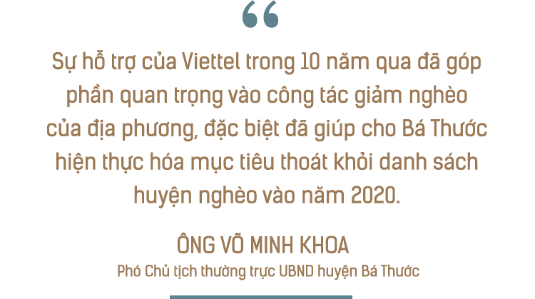

Hôm tròn 1 năm trạm y tế mới của xã Kỳ Tân được dựng lên, y sĩ Vũ Mạnh Trường bồi hồi nhớ lại, ngày lên xã Kỳ Tân (huyện Bá Thước, Thanh Hoá) cách đó 18 năm. Cái trạm y tế cũ cách chỗ trạm mới gần 1 cây số. Anh Trường nhớ là nó chỉ rộng bằng 1/5 trạm hiện tại, nhà ngói, mấy cái phòng tường long tróc, thiết bị khám, thuốc chữa bệnh thứ có thứ không. “Bà con cũng lười đến, đến xong rồi cũng bị bảo lên tuyến huyện để chữa”.
“Mình không dám giữ bệnh nhân, thiếu thốn có chữa được đâu. Còn ai đau bụng, đau đầu thì cho thuốc với dầu rồi bảo về”.
Nhưng một năm nay, Trường bảo công việc của anh cứ không ngớt. “Ngẩng lên ngẩng xuống là hết một ngày”, Trường xởi lởi, “Từ lúc Viettel xây trạm y tế, cung cấp thiết bị đầy đủ, bà con xuống khám suốt. Giờ đẻ cũng đẻ ở trạm xá xã không cần phải về huyện”.
Vợ chồng Trường, Dung ở trạm y tế
Trưởng trạm, bác sĩ Hà Thị Dung nhẩm tính từ đầu năm đến nay đã đỡ đẻ cho 15 sản phụ. Dung là vợ của Trường. Hai vợ chồng gửi con cho bà nội nuôi còn bản thân bám trạm xá. “Hầu như Tết không về ngày nào. 30 Tết bệnh nhân vẫn vào cấp cứu”, Dung nói. Tuy mệt, nhưng Dung bảo may mà giờ có đủ thiết bị nên chữa luôn được cho người ta, nếu là ở trạm cũ thì bác sĩ có muốn cũng bất lực.
Dung cho biết tháng tới sẽ đỡ đẻ cho một sản phụ, là ca thứ 16 của chị từ ngày sang trạm y tế mới. Hà Thị Hiên, 28 tuổi, đang mang thai đứa con thứ 2.
4 năm trước, Hiên phải về thị trấn. “Phải đi mấy chục cây, đường ngoằn ngoèo, các cơn quặn thắt khiến mình như muốn lả đi. Có lúc mình nghĩ sẽ đẻ rơi trên đường”, Hiên hồi tưởng. “Giờ thì đỡ hơn, ở đây cũng đẻ được”. Phương Thảo, đứa con đầu của cô nằm bên cạnh, áp tai vào bụng mẹ, nghoẻn miệng cười.
Bà Vi Thị Thia, nằm đó không xa cũng bảo từ hồi có trạm xá mới bà thấy yên tâm hẳn. Mấy năm trước, mỗi lần bà trái gió trở trời phải xuống huyện nằm khám, con cái bà đều phải bỏ việc theo chăm mẹ. “Ngừng làm là ngừng ăn, con xuống chăm bà thì cả nhà đều đói”, bà nói. Nhà bà cách trạm xá mới này chỉ chừng 1 km. “Khám ở đây đỡ tốn cả tiền xăng”.
Các tổ chức chống nghèo đói trên thế giới có một nhận định chung: Vấn đề gặp phải khi làm việc với những người nghèo nhất thường là việc khó tiếp cận và cảm thấy áp lực phải ưu tiên các nhu cầu tức thời hơn là các khoản đầu tư dài hạn.
Trong khi đó, đề chấm dứt nghèo đói, chúng ta cần phải đảm bảo rằng phải cung cấp cho người nghèo một cách toàn diện, từ sinh kế đến an sinh xã hội. Do vậy, việc cung cấp các công trình, dịch vụ an sinh cũng quan trọng không kém để giúp cho người yếu thế thoát khỏi tình cảnh khó khăn.
Trên thực tế, những người nghèo thường có xu hướng không được tiếp cận về thực phẩm, thiếu thốn về giáo dục, y tế, thường không có tài sản và bị giới hạn trong các lựa chọn kiếm sống. Họ thiếu cơ hội có thể tự chủ cuộc đời mình.
Thế nhưng, cách xử lý dễ nhất khi đứng trước những câu chuyện của người nghèo, nỗi thống khổ của mỗi cá nhân yếu thế, người ta thường có cảm giác cách thức tốt nhất chính là quyên góp dù thực tế đó không phải là cách giải quyết vấn đề.
Quyên góp không phải là xấu, nhưng nếu không không đặt câu hỏi người cần giúp đỡ này là ai, điều gì gây ra hoàn cảnh hiện tại hay hướng giải quyết có lợi nhất cho những người nhận là gì. Một bức tranh toàn cảnh đã không được dựng lên. Những đồng tiền quyên góp có thể dày lên, nhưng nó sẽ không chặt đứt được sợi xích bao quanh số phận cuả người yếm thế.
Người nghèo không phải là người tuyệt vọng, họ không phải không có khả năng tự giúp đỡ bản thân. Thứ họ cần chính là cơ hội để tự lực quyết định số phận… Tất nhiên, để tạo ra một hệ thống giúp người nghèo thay đổi số phận chính họ không hề dễ dàng. Dù vậy, khi tiếp cận để hỗ trợ người nghèo, Viettel đã đi theo cách này từ 10 năm trước, khi tham gia đề án 30A.
Chị Lương Thị Thái ở thôn Pạt được xếp vào danh sách hộ thoát nghèo, nhờ bò. Chị được Viettel tặng bò giữa năm 2017. Chỉ vào con bò lông mượt mà, đang nhẩn nha nhai cỏ trong chuồng, chị nói rằng bò đang chửa, chỉ vài tháng nữa sẽ đẻ.
“Đẻ xong mình sẽ nuôi tiếp, rồi bò cứ thế nhân lên, thành đàn lớn. Mình không bán đâu”, chị cười cười.
Chị bảo cái nghèo đã bám đeo cả đời rồi, mãi mới có tí hi vọng là kiếm được một khoản cho ra tấm ra món. Khi có cả đàn bò, chị có thể nghĩ về một điều gì đó xa hơn, như là đủ khả năng cho mấy đứa nhỏ đi học, hay là sửa lại nhà cho tử tế. Bao năm rồi, mấy người nhà chị chui rúc trong một cái nhà dựng tạm, lợp lá. “Mỗi khi trời mưa, nước hắt thẳng vào nhà, tỉnh cả ngủ cô chú ạ”, chị nói.
Bò giống giúp người dân có sinh kế thoát nghèo
Chị Bùi Thị Chuyên, một bà mẹ đơn thân ở xã Ái Thượng, huyện Bá Thước lại mang một ước mơ khác. Lấy chồng từ năm 18 tuổi, chị từng nghĩ rằng sẽ cùng nhau làm ăn, nuôi dạy con cái. Nhưng hơn 20 năm sau, chị phải bỏ nhà đi với vết bầm tím cả thể xác lẫn tinh thần cùng đứa con gái mới mấy tuổi đầu. Chị bảo cứ nghĩ cuộc đời thế là hết. Nhưng rồi, chị được Viettel hỗ trợ tiền xây nhà, một căn nhà của chị.
Lướt tay trên nền nhà lát gạch bông đã được lau sáng bóng, chị rơm rớm nước mắt. Chị bảo không ngờ là hai mẹ con sẽ có một ngôi nhà đẹp như vậy.
Chị bảo giờ yên tâm chỗ ở rồi, chị sẽ lên thành phố kiếm việc để trả một phần nợ và nuôi con. Hồng, con gái chị học kỳ nào cũng được học sinh giỏi, cháu muốn trở thành cô giáo.
Những giấc mơ dang dở của những người nghèo như chị Thái, chị Chuyên giờ đây đã có cơ sở được thắp lại. Cái nghèo thực tế không đáng sợ nếu có được một biện pháp đúng đắn.
Nhà chị Bùi Thị Chuyên
Các con số đã chứng minh điều này. Sự hỗ trợ nhiều mặt từ Viettel đã góp phần giảm tỷ lệ hộ nghèo tại các huyện trung bình 6,85%/năm, trong đó huyện Đăkrông (Quảng Trị) giảm trung bình 7.3%/năm, huyện Mường Lát (Thanh Hóa) giảm trung bình 7,14%/năm, huyện Bá thước (Thanh Hóa) giảm trung bình 6,12%/năm tỉ lệ hộ tại địa phương sau 10 năm được Viettel hỗ trợ.
“Sự hỗ trợ của Viettel trong 10 năm qua đã góp phần quan trọng vào công tác giảm nghèo của địa phương, đặc biệt đã giúp cho Bá Thước hiện thực hóa mục tiêu thoát khỏi danh sách huyện nghèo vào năm 2020”, ông Võ Minh Khoa, Phó Chủ tịch thường trực UBND huyện Bá Thước hồ hởi nói.
Từ một trong những huyện nghèo cả nước, năm 2019, 33/34 chỉ tiêu của huyện hoàn thành và vượt mức đề ra. Thu nhập bình quân đầu người ước đạt 27,5 triệu đồng/người. Tổng thu ngân sách nhà nước ước đạt 63,6 nghìn tỷ đồng, đạt 151,8%, huy động vốn đầu tư phát triển hơn 3.000 tỷ đồng, đạt 126,5%...
Đại tá Dương Văn Toàn, Chủ nhiệm Chính trị Tập đoàn Công nghiệp - Viễn thông Quân đội Viettel chia sẻ: “Sau nhiều năm thực hiện, điều chỉnh với chương trình 30A, chúng tôi thấy rằng, việc giúp đỡ bà con thoát nghèo bền vững cần được Viettel phối hợp cùng địa phượng thực hiện với một hệ sinh thái giảm nghèo chứ không đơn thuần là những biện pháp đơn lẻ, trực tiếp”.
Ông Toàn chia sẻ, hệ sinh thái giảm nghèo mà Viettel thực hiện để giúp người dân tự vươn lên gồm việc xây trạm y tế (để chăm sóc sức khỏe), trường học và nhà bán trú dân nuôi (giáo dục), nhà kiên cố (an cư lạc nghiệp), bò giống (sinh kế)… “Viettel quan niệm, giúp người nghèo, phải đi từ gốc rễ, phải giúp họ có sinh kế, mới có thể thoát nghèo bền vững”, ông Toàn nhận xét.
Tính đến thời điểm hiện tại, Viettel đã đầu tư gần 250 tỷ đồng hỗ trợ hơn 3 huyện miền núi Mường Lát, Bá Thước (Thanh Hoá) và Đắkrông (Quảng Trị) để tạo ra một vòng tuần hoàn giúp người nghèo tự chủ về số phận.
Cụ thể, Viettel đã trao hơn 2.500 con bò giống, 2.200 ngôi nhà đến tận tay các hộ nghèo tại 3 huyện. Trong đó, Mường Lát gần 1200 con và 355 ngôi nhà, Bá Thước gần 700 con bò và 440 ngôi nhà, Đắkrông gần 600 con bò và 1.469 ngôi nhà).
13 công trình gồm 8 trạm y tế, 3 trường học, 2 nhà bán trú trên địa bàn 3 huyện cũng được Viettel dựng lên.